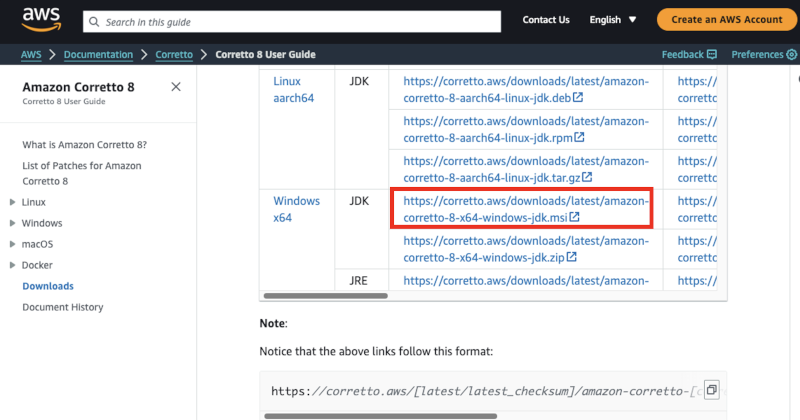

Setting up the R environment
Here are the steps for installing the required environment to run the OHDSI R packages. Four things needs to be installed:
- R is a statistical computing environment. It comes with a basic user interface that is primarily a command-line interface. For stability, we’ve picked one R version that we aim to support for a while moving forward. Since 2023-04-01 our target is R 4.2.3. We highly recommend installing R 4.2.3 for maximum compatibility.
- RTools is a set of programs that is required on Windows to build R packages from source.
- RStudio is an IDE (Integrated Development Environment) that makes R easier to use. It includes a code editor, debugging and visualization tools. Please use it to obtain a nice R experience.
- Java is a computing environment that is needed to run some of the components in the OHDSI R packages, for example those needed to connect to a database.
In order to install HADES, you must also set a GitHub Personal Access Token as described in this section
Instructions for Windows
These instructions are also demonstrated in this video, showing a step-by-step guide to installing the required software.
Installing R
Go to https://cran.r-project.org/bin/windows/base/old/4.2.3/, click on ‘R-4.2.3-win.exe’ to download.
After the download has completed, run the installer. Use the default options everywhere, with two exceptions: First, it is better not to install into program files. Instead, just make R a subfolder of your C drive as shown below. Second, to avoid problems due to differing architectures between R and Java, if you’re installing an older R version (< 4.2.0), disable the 32-bit architecture as also shown below.

Once completed, you should be able to select R from your Start Menu.
Installing RTools
Go to https://cran.r-project.org/bin/windows/Rtools/rtools42/rtools.html, and download the RTools installer.
After downloading has completed run the installer. Select the default options everywhere.
Installing RStudio
Go to https://posit.co/download/rstudio-desktop/, select ‘Download RStudio Desktop For Windows’.
After downloading, start the installer, and use the default options everywhere.
Installing Java
Go to https://docs.aws.amazon.com/corretto/latest/corretto-8-ug/downloads-list.html, and select the Windows 64-bit JRE installer as highlighted below. 
After downloading just run the installer.
The default maximum Java heap space is very small (only 512MB), so to avoid Java out-of-heap-memory errors, we must increase the maximum heap size. To set this for all R programs, add this line to the
.Renvironfile:_JAVA_OPTIONS='-Xmx4g'The easiest way to edit your
.Renvironfile is by using theusethispackage:install.packages("usethis") library(usethis) edit_r_environ()This will open
.Renvironin a text editor. Add the line, save the file, and restart R. Java will now have a maximum of 4GB of heap space available.
Instructions for Mac
Installing R
Go to https://cran.r-project.org/bin/macosx/base/, click on ‘R-4.2.3.pkg’ to download.
After the download has completed, run the installer and accept all of the default options. You should see a screen indicating that the installation was successful.

Installing R build tools
We will need to install C and Fortran compilers in order to build R packages from source code. These are included with Xcode which can be downloaded from the Mac App store.
Open the App Store in Mac OS and install Xcode. Xcode is a large program. If disk space is scarce you could also try only installing Xcode command line tools by following the instructions here. Verify that the C compiler gcc is installed by opening the terminal and running the command
clang. You should see an error that says “no input files”.Download and install the gfortran compiler
gfortran-12.2-universal.pkgfrom https://cran.r-project.org/bin/macosx/tools/. Verify the installation by opening the terminal and running the command/opt/gfortran/bin/gfortran. You should see an error that says “no input files”. R 4.2.3 will look in the wrong place for gfortran, so you must point it to the right location. Runusethis::edit_r_makevars()to open~.R/Makevarsand add:F77 = /opt/gfortran/bin/gfortran FC = /opt/gfortran/bin/gfortran FLIBS=-L /opt/gfortran/libGo to https://www.xquartz.org/, download the .dmg and run the installer.
Verify that build tools are installed and available by opening an R console and running
install.packages("pkgbuild") pkgbuild::check_build_tools()
Installing RStudio
- Go to https://posit.co/download/rstudio-desktop/, select ‘Download RStudio Desktop For Mac’.
Installing Java
Go to https://www.oracle.com/java/technologies/javase-jdk15-downloads.html, and select the Mac OS installer for the Oracle JDK as highlighted below.
After downloading just run the installer. Check that java is installed by opening the terminal and running the command
java. If you see some helpful output about usage then the installation was successful.
Verifying the installation
You should now be ready to go, but we should make sure. Start R-studio, and type
install.packages("SqlRender")
library(SqlRender)
translate("SELECT TOP 10 * FROM person;", "postgresql")## [1] "SELECT * FROM person LIMIT 10;"
## attr(,"sqlDialect")
## [1] "postgresql"This function uses Java, so if all goes well we know both R and Java have been installed correctly!
Another test is to see if source packages can be built. Run the
following R code to install the CohortMethod package from
the OHDSI GitHub repository:
install.packages("remotes")
remotes::install_github("OHDSI/CohortMethod")GitHub Personal Access Token
Installing HADES packages requires downloads from GitHub. Unfortunately, GitHub has a cap on how many downloads an anonymous user can make in a short amount of time, and this cap is reached when trying to download all HADES packages. To avoid this cap, we need to authenticate ourselves using our GitHub account. A known GitHub user has a much higher download cap, and can install HADES without issues. We can authenticate ourselves by first creating a Personal Access Token (PAT), and then providing this to R.
Fortunately, you will need to do this only once. After you’ve set your PAT in R, you can rely on it to be there in all your future R sessions.
Creating a Personal Access Token
Before we can create a PAT, you must make sure that you have a valid GitHub account. You can create one for free at GitHub.com.
The easiest way to create a GitHub PAT is by using the usethis package. Running this code will open a browser that allows you to generate a PAT:
install.packages("usethis")
library(usethis)
create_github_token(scopes = c("(no scope)"), description = "R:GITHUB_PAT", host = "https://github.com")You may need to log on to GitHub. Note that the PAT does not require any of the permissions listed, so you can leave all checkboxes unchecked. Scroll down and click on ‘Generate token’ to generate your PAT. Your PAT is a sequence of 40 letters and numbers. Make sure to copy your PAT, because you will not be able to see it again once you close your browser!
Adding your Personal Access Token to R
Next, we need to make the PAT available to R. For this we need to add
a line to the .Renviron file that looks like this:
GITHUB_PAT = 'a1b2c3d4e5f6g7h8g9h0ijklmnopqrstuvwxyz'where ‘a1b2c3d4e5f6g7h8g9h0ijklmnopqrstuvwxyz’ is your PAT.
The easiest way to edit your .Renviron file is by using
the usethis package again:
edit_r_environ()This will open .Renviron in a text editor. Add the line
with your PAT, save the file, and restart R. The PAT will now be
available to the various R functions.